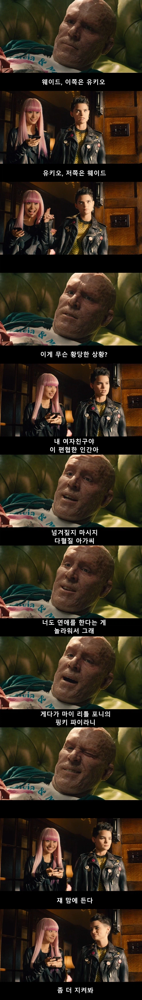

여자랑 연애를? X
너같은 애가 연애를? O

여자랑 연애를? X
너같은 애가 연애를? O
유키오 진짜 이쁘게 나왔어
하이 웨이드~
히이 유키오~
웃는거 보니까 지도 그럴싸하다 생각하는 건가
유키오 너무 커여움
하이 웨이드~
하이 유키오~
바이 웨이드~
바이 유키오~
더 울버린에서 나오는 유키오를 아는사람 : ㄱㅡ
너때문에 생각났잖니
택배사 출신이구나
리키시에서 여주로 나와서 좀 놀람ㅋㅋ
웨이드 뻐킹 윌슨
솔직히 맞긴해 대머리련